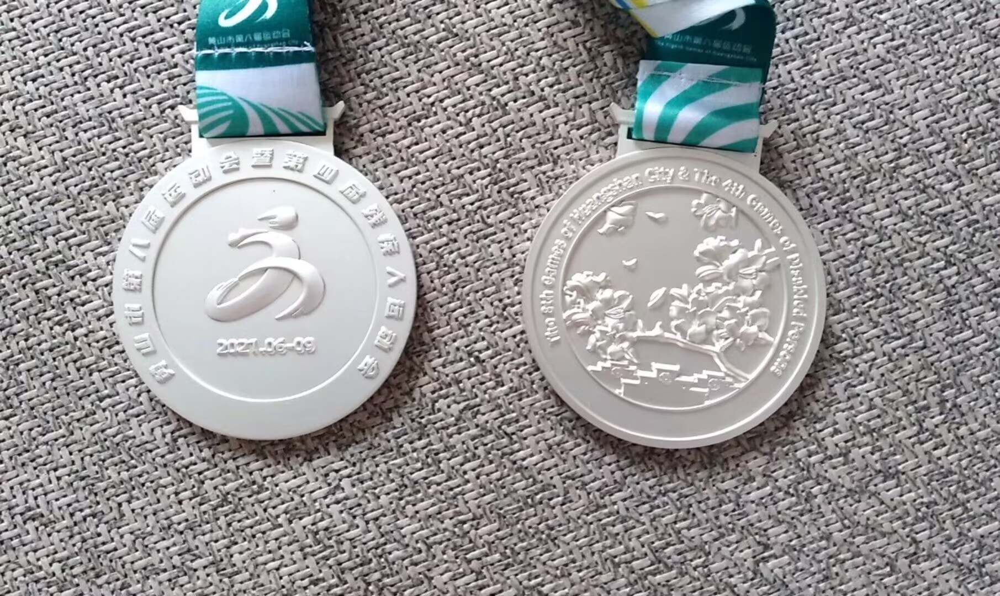

李世石在2010年前五年和后五年几乎可以说称霸了世界围棋棋坛。李世石的棋风以凶狠、锐利著称，善于在复杂局面中挑起战斗，凭借其强大的计算力和果断的决策能力，在乱战中寻找胜机，古李十番棋的大胜是他最标志性的胜利。之后，他更是代表着全人类去迎接来自AI的挑战。虽然最后落败，但他仍然称得上是人类的英雄。
柯洁以其独特的棋风和出色的棋艺在围棋界享有盛誉。他的棋风可以概括为“轻、飘、新、勇”，展现出灵动和创新的特点。柯洁的计算力极其强大，对局中常常展现出个性和自信，不拘泥于定式，其棋局往往初看不合理，细品却有其独到之处。同时，他对于胜负有着敏锐的感觉，被称为具有“胜负师”气质的棋手，能够在关键时刻把握住机会。柯洁的棋艺风格独特，不仅在布局上灵活多变，而且在中盘战斗力和官子水平上都有出色的表现。他的棋局常常充满灵感和天才创意，为围棋界带来许多精彩纷呈的比赛。

在初升高的暑假，我重新拾起两年没碰的围棋。在训练了一个月后，我跟随着队伍参加了市里的比赛。这次比赛我的发挥非常不错，最后拿下了亚军，并帮助团队拿下了团体第二的好成绩。现在我也经常下网棋，希望未来能有更多比赛的机会。